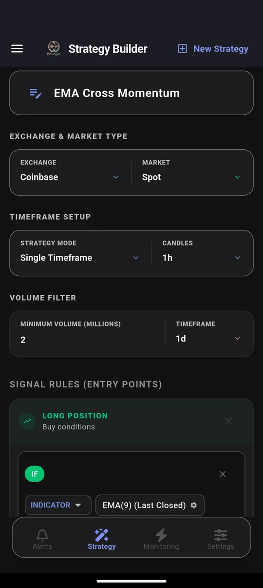
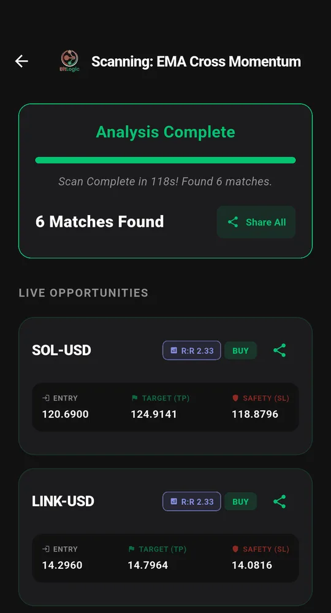

Coinbase Custom Alerts: How to Get RSI, EMA and Volume Alerts on Coinbase Coins
Quick answer: Coinbase's alerts react only to price: automatic alerts for coins on your watchlist, or a custom price target you set on one asset. You can't ask Coinbase to tell you when RSI drops below 30, when a moving average crosses, or when volume spikes. BitLogic adds that. It scans hundreds of Coinbase's USD, USDC and USDT pairs against rules you build and alerts you on your phone, or in Telegram, when one matches. A test on 26 September 2026 checked 282 active Coinbase pairs in 118 seconds and found 6 matches.
BitLogic is a no-code crypto screener and alert app for Android and Windows, with a free web screener. It scans every pair on an exchange against rules you build and sends matches as push notifications, or as Telegram messages on Pro.
Features, availability and test results checked 26 September 2026.
Coinbase Alerts Not Working? Check These First
Before blaming Coinbase, check the three most common causes:
- The coin isn't on your watchlist. Coinbase's automatic price alerts only cover assets on your watchlist. Star the coin, or set a custom alert on it.
- Notifications are off. In the Coinbase app, check Price Alerts and Custom Alerts under Notification Settings, then check your phone's notification settings for the Coinbase app.
- You expected an indicator alert. Coinbase alerts trigger on price targets and percentage moves only. If you were waiting for an RSI or moving-average signal, it was never going to fire.
The third one is the real limitation, and it's where a screener comes in. (Source: Coinbase Help: Set and receive price alerts.)
What Coinbase Alerts Can and Can't Do
| Coinbase price alerts | BitLogic rule alerts | |
|---|---|---|
| Coins covered | Your watchlist, or one asset per custom alert | Hundreds of Coinbase pairs per scan |
| Triggers | Price target, % change | Indicators, price, volume, candlestick patterns |
| RSI / EMA / MACD / Bollinger | No | Yes |
| Several conditions together | No | Yes: all must be true |
| Short signals | No | Yes |
| Telegram | No | Yes (Pro) |
| Needs account access | Yes (it is your Coinbase account) | No. Public market data only |
Can You Use Coinbase in Your Country?
Coinbase is licensed or registered in all five of these markets:
| Country | Coinbase status |
|---|---|
| United States | Available |
| United Kingdom | Available (FCA-registered) |
| Canada | Available. Registered with Canadian securities regulators |
| Australia | Available |
| Germany | Available. MiCA-licensed (CSSF Luxembourg) |
Spot or Futures? BitLogic's Coinbase Futures option reads Coinbase International Exchange perpetuals. Those aren't available to US residents, and UK retail customers can't trade crypto derivatives. Most readers should screen Coinbase Spot.
How to Set Up Custom Alerts for Coinbase
Step 1: Choose Coinbase
In the Strategy tab, pick Coinbase and Spot. Add a minimum-volume filter to skip thin markets. This test used $2 million per day.

Step 2: Build your rule
Pick an indicator, a comparison and a value from menus. Add more conditions and they must all be true:

Step 3: Scan Coinbase

Each match shows an entry, a take-profit and a stop-loss, calculated from the percentages you choose.
Step 4: Turn on the alert
Live Monitoring re-runs the same strategy in the background (every 1, 5, 15 or 30 minutes, every 1 or 4 hours, or once a day) and notifies you when a new pair matches, even with the app closed. You can monitor up to five strategies at once. On Pro, the same alerts also go to Telegram: tap Connect Telegram, press Start in the bot, and you are done.

Get Coinbase alerts free on Google Play, or on Windows.
The Test: Coinbase Spot, 26 September 2026
| Setting | Value |
|---|---|
| Market | Coinbase Spot, 1-hour candles |
| Rule | EMA 9 > EMA 21 > EMA 200, volume above average (long); the mirror image (short) |
| Volume filter | $2M per day |
| Pairs checked | 282 active USD, USDC and USDT pairs |
| Time | 118 seconds |
| Matches | 6, including SOL-USD and LINK-USD (buy) |
Six matches from 282 pairs is a tight result. The $2 million volume filter removed thinly traded coins, and the rule wants short-, medium- and long-term trend all pointing the same way. That's the kind of shortlist you can check in two minutes, rather than a wall of tickers.
These are scan results, not recommendations. A match means a pair met the rule at that moment, nothing more.
Three Custom Coinbase Alerts
1. RSI oversold, across every pair scanned
IF RSI(14) [1h, Last Closed] Is Less Than 30One condition, covering every pair in the scan: the alert Coinbase itself can't set. Add a trend filter, as in our RSI Reversal Bounce strategy, if it fires too often.
2. Moving-average crossover
IF EMA(50) [1d, Last Closed] Crosses Above EMA(200) [1d]The daily "golden cross". It's rare, slow, and worth a notification.
3. Volume spike with a green candle
IF Volume [1h, Last Closed] Is Greater Than Volume SMA(20) × 3
AND Close [1h] Is Greater Than Open [1h]This catches a coin suddenly trading three times its usual volume while buyers are in control.
Coinbase Timeframes in BitLogic
| Market | Timeframes |
|---|---|
| Coinbase Spot | 1m, 5m, 15m, 1h, 6h, 1d |
Coinbase doesn't publish 4-hour candles. Use 6-hour candles for swing rules.
Other Regulated Exchanges to Screen
Coinbase, Kraken and Bitstamp are the regulated set for US, UK and EU traders. The same rule works on all three, so you can screen whichever one you actually trade on.
FAQ
Can Coinbase send RSI alerts?
No. Coinbase alerts trigger on price targets and percentage moves only. For RSI, moving-average or volume alerts on Coinbase coins, use a screener such as BitLogic, which checks hundreds of Coinbase pairs against rules you build.
Why are my Coinbase price alerts not working?
Coinbase's automatic price alerts only cover assets on your watchlist, and they only arrive if notifications are enabled both in Coinbase's notification settings and in your phone's settings. Coinbase alerts also never trigger on indicators, only on price.
Does Coinbase have a crypto screener?
Coinbase shows market lists and top movers, but no screener that checks every pair against your own technical rule. BitLogic adds that for Coinbase spot markets.
Does BitLogic need access to my Coinbase account?
No. BitLogic reads Coinbase's public market data only. It never connects to your account and never places trades.
Can I get Coinbase alerts on Telegram?
Yes. BitLogic Pro sends every Live Monitoring match to Telegram after a one-tap connection.
How much does BitLogic cost?
Scanning, the rule builder, Live Monitoring and push alerts are free. Guests get 3 scans per 24 hours, and a free account raises that limit. Pro adds Telegram delivery, unlimited scans, an ad-free app and priority support, with a 14-day free trial. Pro is priced in your local currency on Google Play.
The Bottom Line
Coinbase alerts tell you when a price moves. Custom alerts tell you when your setup appears, on any coin in the scan. Write the rule once, turn on Live Monitoring, and let it watch Coinbase for you.
Download BitLogic free on Google Play and set your first Coinbase alert.
Nothing here is financial advice. BitLogic is not affiliated with Coinbase. Exchange availability changes, so check Coinbase's terms for your country.